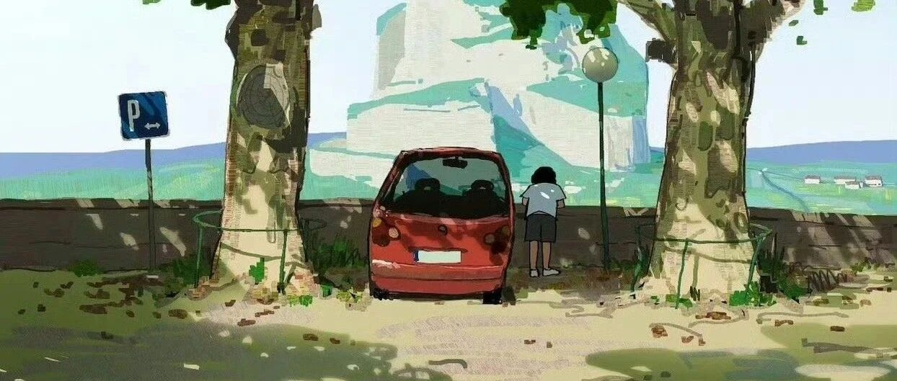

我财务自由后最值得的消费，出现了！
点击关注 秋秋在分享
一起实现财务自由退休
大家好，我是秋秋呀。
今天是一篇答疑，分享我FIRE提前退休后花的最值得的钱，真实心得总结。
从前我认为存钱是底气，花钱是满足自己的购物欲和虚荣心，现在我发现，金钱最大的作用是用来买舒适和自由的。
1.身体舒适
1)耳机
降噪耳机YYDS！
如果你喜欢音乐喜欢安静喜欢看电影追剧，这个是我觉得花钱最值的。
有了它，我一个人出门也像拥有全世界。
堵车地铁上乱糟糟，上班心情很不爽，在家看电影不沉浸？
只要开启降噪，世界瞬间安静！
我买的是索尼的，质量还不错，用了降噪耳机真的会提高幸福感。

2)洗护用品
味道会带给人放松的感觉，鼻子舒服了，身体也会舒服。
沐浴露、身体乳、香水，都要是我闻着舒坦的味。洗完澡立马放松，这钱花得值！
洗发水护发精油我用的卡诗。

这个味道就是那种很舒服的清香，一开始买可以入旅行装，精油的话30ml都能用好久。
沐浴露力士，好闻还不贵，身体乳不追求功效就用大白罐。
护手霜欧舒丹的还不错，我喜欢买这种小样，放包里刚刚好。

3) 衣物
我很久都没有穿过“美丽刑具”，高跟鞋蕾丝都不舒服。
现在买衣服鞋子我都会看用料。
像夏天就买香云纱、三醋酸，凉快又有质感。
一件小黑裙小白裙就能覆盖99%的正式场合，品牌可以看一下theory ，cos，sandro，当然还要多去试。
冬天我会选羊绒，一条围巾加一个大衣就够了，北方再有个羽绒服。
围巾可以买大牌的，有画龙点睛的作用。包括也可以买各种大牌的丝巾。
外套基础，配饰咱就不基础。


大衣可以认准双面羊绒，我买的现在穿了4年也不落伍。
很多好料子都不贵，却可以穿很久。

除了衣物，床单被罩我也会用高支棉，会有真丝一样的丝滑感，好的被子也会又轻又保暖。
床垫枕头也是买贵一点很值得！每晚睡觉都会觉得很开心。
身体的感受，如果钱能伺候好，我就觉得花的不亏。
4)饮食
自从我做完食物不耐受，才发现以前确实很少吃鱼肉虾，吃的最多的还是主食。
现在观察身体的反应，多吃牛羊鱼虾，牛油果蓝莓西兰花各种蔬菜，身体感觉越来越清爽。

吃好，多花钱也很值。
让嘴巴满足不是只满足馋虫，还要多吃新鲜干净的，肉蛋奶蔬菜，养出健康身体，精力充沛不易病，这才是真值！
2.节省时间
花钱买时间！也是我觉得花钱又一值得的事！
比如扫地机器人洗碗机，洗烘一体机。
我第一次用烘干机真的觉得太省事了！衣服拿出来就热乎乎的，对于我这种懒人来说非常友好。
还有家政也是省时神器，我之前都是定期请阿姨来打扫，专业的事交给专业的人。
几十块钱换我一周的舒服，看着家里锃光瓦亮，自己躺沙发刷剧，这买来的清闲，千金不换！
高铁商务座，住好一点的酒店，都会很大程度上降低我们的损耗。
只有家人都舒服了，咱们心情好了，才能带来更多动力。

以上，就是我财务自由后花的最值得的钱！
虽然这些钱，花了别人也都不大看的到，但是咱身体心灵是真舒服了，很值！